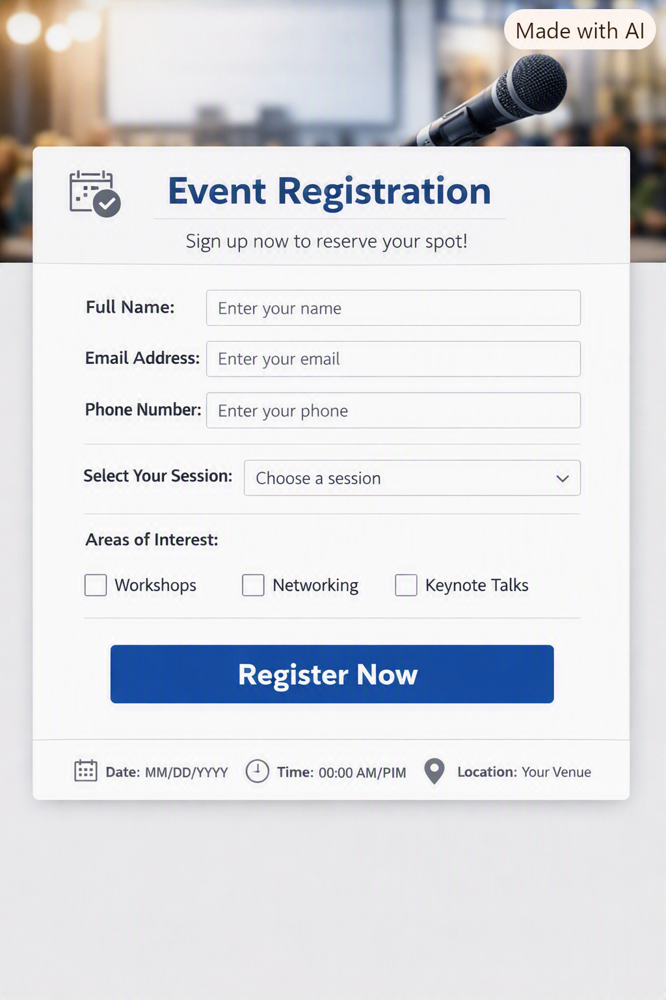

I am muthulakshmi.i a, from madurai.i recently completed my BE ECE in mangayarkarasi college of engineering.
my strenth is i am quick learner and hardworking persona self modivated personal also
my weakness is i spend extra time to make my perfect work
my achivements are State Level Winner – Throwball State Level Winner – Volleyball State Level Winner – Javelin Throw State Level Winner – Discus Thro
my personal summary Passionate and detail-oriented Flutter & Full Stack Developer with hands-on experience in developing cross-platform mobile applications and full-stack web applications. Proficient in Flutter, Dart, Java, Python, React.js, Spring Boot, HTML, CSS, JavaScript, SQL, and MySQL. Experienced in building responsive user interfaces, integrating REST APIs, working with Firebase, and using Git/GitHub for version control. Strong analytical, problem-solving, and teamwork skills with a passion for learning new technologies and delivering scalable, high-quality software solutions.
Internship & Workshops Junior Software Developer Intern — Vinsys IT Services Contributed to real-world software development projects. Assisted in coding, testing, debugging, and application maintenance. Collaborated with developers to build high-quality software solutions. Improved coding, analytical, and problem-solving skills. Flutter Developer Trainee — Inosyt Technologies Pvt. Ltd., Madurai Developed responsive mobile applications using Flutter and Dart. Created reusable UI components. Integrated REST APIs. Worked with Firebase and Git for version control. Embedded Systems Intern — Networkz Systems Learned embedded systems concepts. Worked on microcontrollers and circuit troubleshooting. Embedded Systems Intern — SmartMaker Developed embedded hardware prototypes. Worked on IoT and embedded system fundamentals. CCNA Networking Workshop — Networkz Systems (Feb 2025) PCB Design Workshop — Hi-Tech Academy (Mar 2025) Projects
